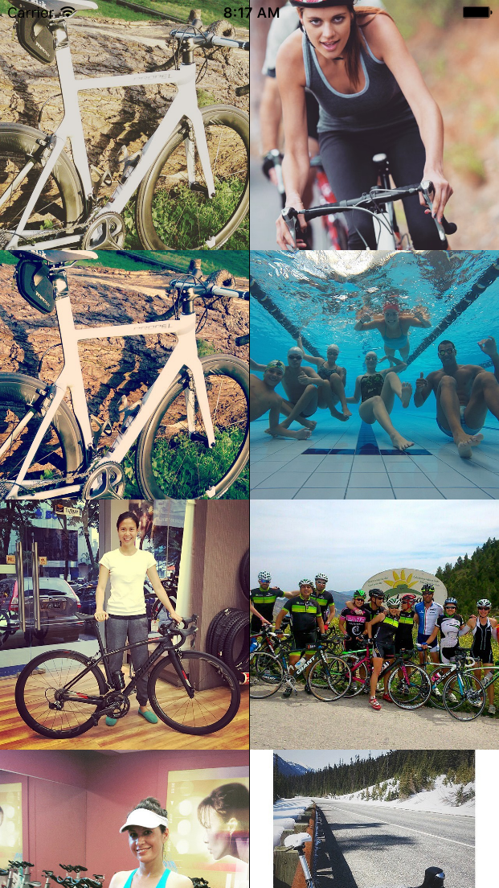
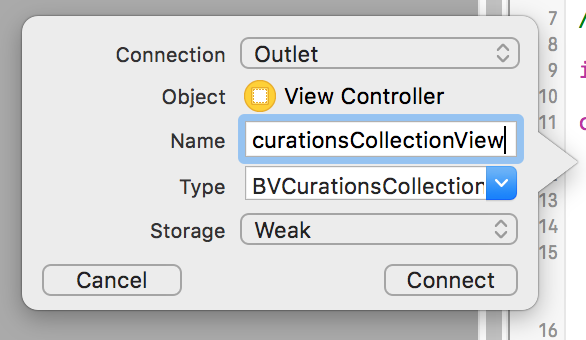
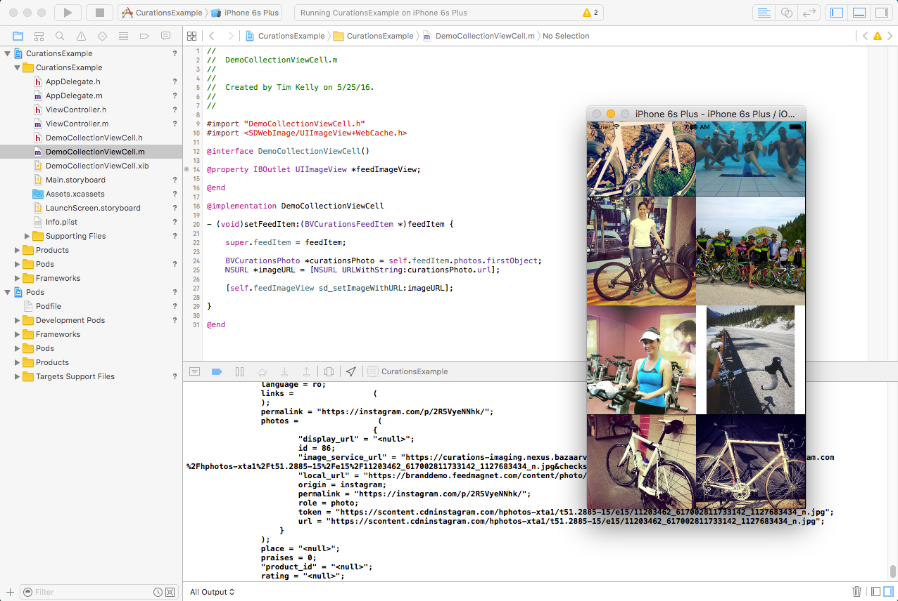

Use the Curations module of the Bazaarvoice Mobile SDKs to harness a wealth of social media content tailored for your marketing needs, and display it where it can deliver engagement, trust, and conversion: your iOS app.
You can build and display your custom Curations content in a Bazaarvoice-subclassed UICollectionView (BVCurationsCollectionView). The UICollectionView and UICollectionView cell wrap the Curations Display API and Bazaarvoice analytics, the latter providing you with rich user-interaction and ROI (return on investment) data. If you are familiar with UICollectionView, creating a BVCurationsCollectionView will be fairly straightforward. However, even if you aren't, you should be able to complete the following steps to create a basic Curations display with your data.
/Examples/Curations. For a more comprehensive demonstration of the Conversations API, please also see the BVSDKDemo project under /Examples/BVSDKDemo.
You must have Bazaarvoice Curations enabled to use the Curations module. Contact Bazaarvoice to set up Curations and to get your apiKeyCurations.
Important: Before you start implementing this Mobile SDK module, verify your installation by checking the steps on the Installation and Configuration page.
The Curations module provides a BVCurationsCollectionView, which hosts the display data from the Curations API. All you need to do is subclass a BVCurationsCollectionViewCell with your own implementation and .xib file, then add the content to the BVCurationsCollectionView with the UICollectionViewDataSource protocol messages as you would any UICollectionView object.
Using the UI views provided by the Mobile SDK provides you with all the analytics events necessary for calculating end-user interactions and ROI reporting. Also, because of the flexibility that UICollectionView provides, you can build and display your feed in any grid and flow style you like.
The following example produces a scrollable grid with a Curations feed, similar to the following screenshot:
BVCurationsCollectionViewCell from File > New > File, as shown in the following screenshot.DemoCollectionViewCell and subclass from
BVCurationsCollectionViewCell, as shown in the following screenshot.UIImageView outlet called feedImageView. Use the didSet override to configure the UI when feedItem is set. Your DemoCollectionViewCell should look like the following example:
import UIKit
import BVSDK
import SDWebImage
class DemoCollectionViewCell: BVCurationsCollectionViewCell {
@IBOutlet weak var feedImageView: UIImageView!
override var feedItem : BVCurationsFeedItem? {
didSet {
let photo : BVCurationsPhoto = self.feedItem!.photos.first!
let imageUrl : NSURL = NSURL(string:photo.imageServiceUrl)!
self.feedImageView.sd_setImageWithURL(imageUrl)
}
}
}
#import "DemoCollectionViewCell.h"
#import <SDWebImage/UIImageView+WebCache.h>
@interface DemoCollectionViewCell()
@property IBOutlet UIImageView *feedImageView;
@end
@implementation DemoCollectionViewCell
- (void)setFeedItem:(BVCurationsFeedItem *)feedItem {
super.feedItem = feedItem;
BVCurationsPhoto *curationsPhoto = self.feedItem.photos.firstObject;
NSURL *imageURL = [NSURL URLWithString:curationsPhoto.url];
[self.feedImageView sd_setImageWithURL:imageURL];
}
@end
Tip: This implementation is a minimal UI for a BVCurationsFeedItem object. You can add more elements and customize the UI extensively.
DemoCollectionViewCell.DemoCollectionViewCell.xib, complete the following steps:UICollectionViewCell and set its height and width to 250.
UIView, located on the left in the following screenshot.UIImageView to the .xib. Using the pin tool, pin it to all sides of the cell:.xib to be DemoCollectionViewCell:Set the Collection Reusable View Identifier of the .xib to be DemoCell:
Connect the UIImageView to the feedImageView outlet in the source file. Select the Assistant Editor and connect the outlet:
Main.storyboard file. Drag and drop a UICollectionView object onto the View Controller:UICollectionView you just added full-screen by pinning the edges to the parent container on all four sides:BVCurationsCollectionView:BVCurationsCollectionView to the source code:Name the outlet curationsCollectionView:

After you set up BVCurationsCollectionView and have the BVCurationsCollectionViewCell source and .xib file ready, all you need to do is connect them in your ViewController. The following ViewController exemplifies what a very minimal configuration would look like to draw a feed from the Curations API and handle a tap event on an item. Since BVCurationsCollectionView is configurable as a UICollectionView, you can embed them anywhere it makes sense in your application's user interface.
The following example shows the completed ViewController in full detail.
import UIKit
import BVSDK
class ViewController: UIViewController, UICollectionViewDataSource, UICollectionViewDelegate {
@IBOutlet weak var curationsCollectionView: BVCurationsCollectionView!
var curationsFeedItems:[BVCurationsFeedItem]?
override func viewDidLoad() {
super.viewDidLoad()
self.curationsCollectionView.registerNib(UINib(nibName: "DemoCollectionViewCell", bundle: nil), forCellWithReuseIdentifier: "DemoCell")
self.curationsCollectionView.delegate = self
self.curationsCollectionView.dataSource = self
let groups = ["__all__"]
let feedRequest = BVCurationsFeedRequest(groups: groups)
feedRequest.limit = 40
feedRequest.hasPhoto = true
feedRequest.withProductData = true
self.curationsCollectionView.loadFeedWithRequest(feedRequest, withWidgetId: nil, completionHandler: { (feedItems) -> Void in
// success
// closure from request returned on main thread
self.curationsFeedItems = feedItems as? [BVCurationsFeedItem]
self.curationsCollectionView.reloadData()
}) { (error) -> Void in
// error
print("ERROR: Curations feed could not be retrieved. Error: " + error.localizedDescription)
}
}
override func viewWillLayoutSubviews() {
super.viewWillLayoutSubviews()
let layout = (curationsCollectionView.collectionViewLayout) as! UICollectionViewFlowLayout
layout.itemSize = CGSizeMake(curationsCollectionView.bounds.height, curationsCollectionView.bounds.height)
layout.scrollDirection = UICollectionViewScrollDirection.Vertical
layout.itemSize = CGSizeMake(curationsCollectionView.bounds.width / 2, curationsCollectionView.bounds.width / 2)
layout.minimumInteritemSpacing = 0
layout.minimumLineSpacing = 0
}
// MARK: UICollectionViewDatasource
func collectionView(collectionView: UICollectionView, numberOfItemsInSection section: Int) -> Int {
return self.curationsFeedItems?.count ?? 0
}
func collectionView(collectionView: UICollectionView, cellForItemAtIndexPath indexPath: NSIndexPath) -> UICollectionViewCell {
let cell = collectionView.dequeueReusableCellWithReuseIdentifier("DemoCell", forIndexPath: indexPath) as! DemoCollectionViewCell
let feedItem : BVCurationsFeedItem = self.curationsFeedItems![indexPath.row]
cell.feedItem = feedItem
return cell
}
// MARK: UICollectionViewDelegate
func collectionView(collectionView: UICollectionView, didSelectItemAtIndexPath indexPath: NSIndexPath) {
let feedItem : BVCurationsFeedItem = curationsFeedItems![indexPath.row]
print("Selected: " + feedItem.description)
}
}
#import "ViewController.h"
#import "DemoCollectionViewCell.h"
#import <BVSDK/BVCurations.h>
@interface ViewController () <UICollectionViewDataSource, UICollectionViewDelegate>
@property (weak, nonatomic) IBOutlet BVCurationsCollectionView *curationsCollectionView;
@property (strong, nonatomic) NSArray<BVCurationsFeedItem *> *curationsFeedItems;
@end
@implementation ViewController
- (void)viewDidLoad {
[super viewDidLoad];
self.curationsFeedItems = [NSArray array];
// Set up the UI
[self.curationsCollectionView registerNib:[UINib nibWithNibName:@"DemoCollectionViewCell" bundle:nil]
forCellWithReuseIdentifier:@"DemoCell"];
self.curationsCollectionView.delegate = self;
self.curationsCollectionView.dataSource = self;
// Create the request parameters
NSArray *groups = @[@"__all__"];
BVCurationsFeedRequest *feedRequest = [[BVCurationsFeedRequest alloc] initWithGroups:groups];
feedRequest.limit = 40;
feedRequest.hasPhoto = YES;
feedRequest.withProductData = YES;
[self.curationsCollectionView loadFeedWithRequest:feedRequest withWidgetId:nil completionHandler:^(NSArray<BVCurationsFeedItem *> * _Nonnull feedItemsResult) {
// completion on main thread
NSLog(@"Success loading Curations Display!");
self.curationsFeedItems = feedItemsResult;
[self.curationsCollectionView reloadData];
} withFailure:^(NSError * _Nonnull error) {
// error on main thread
NSLog(@"ERROR: Curations feed could not be retrieved. Error: %@", error.localizedDescription);
}];
}
- (void)viewWillLayoutSubviews{
[super viewWillLayoutSubviews];
UICollectionViewFlowLayout *layout = (UICollectionViewFlowLayout *)self.curationsCollectionView.collectionViewLayout;
layout.itemSize = CGSizeMake(self.curationsCollectionView.bounds.size.height, self.curationsCollectionView.bounds.size.height);
layout.scrollDirection = UICollectionViewScrollDirectionVertical;
layout.itemSize = CGSizeMake(self.curationsCollectionView.bounds.size.width / 2, self.curationsCollectionView.bounds.size.width / 2);
layout.minimumInteritemSpacing = 0;
layout.minimumLineSpacing = 0;
}
#pragma mark - UICollectionViewDataSource
-(NSInteger)numberOfSectionsInCollectionView:(UICollectionView *)collectionView{
return 1;
}
- (NSInteger)collectionView:(UICollectionView *)collectionView numberOfItemsInSection:(NSInteger)section{
return [self.curationsFeedItems count];
}
- (UICollectionViewCell *)collectionView:(UICollectionView *)collectionView cellForItemAtIndexPath:(NSIndexPath *)indexPath{
DemoCollectionViewCell *cell = [self.curationsCollectionView dequeueReusableCellWithReuseIdentifier:@"DemoCell" forIndexPath:indexPath];
cell.feedItem = [self.curationsFeedItems objectAtIndex:indexPath.row];
return cell;
}
#pragma mark UICollectionViewDelegate
- (void)collectionView:(UICollectionView *)collectionView didSelectItemAtIndexPath:(NSIndexPath *)indexPath{
BVCurationsFeedItem *selectedFeedItem = [self.curationsFeedItems objectAtIndex:indexPath.row];
NSLog(@"Selected: %@", selectedFeedItem.description);
}
@end
The app should populate the collection view with the Curations display. Although the app should run correctly, it will still need styling to look professional.
Copyright 2016 Bazaarvoice, Inc. All rights reserved.
Use of the Bazaarvoice Mobile SDKs is contingent on your agreement and conformance with Bazaarvoice's API Terms of Use. Additionally, you agree to store all data acquired by the SDK or Bazaarvoice's API only within the storage of the individual application instance using the SDK or API. You also agree to use the data acquired by the SDK or API only within the context of the same individual application instance and only for purposes consistent with that application's purpose. Except as otherwise noted, the Bazaarvoice iOS SDK is licensed under the Apache License, Version 2.0.